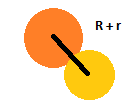
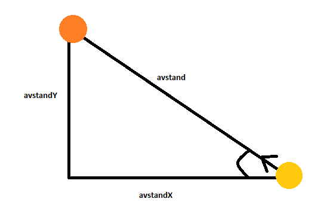

Opprett en animasjon der en ball har både x- og y-hastighet og kolliderer i veggene.
Vi har så langt sett på kollisjoner mellom objekter og canvaset. I dag skal vi utvide dette til kollisjoner mellom ulike objekter.
Runde objekter er fine å forholde seg til, da de kan representeres med sentrum og radius uansett hvordan de roteres. Dersom man har to runde objekter vil man vite at de kolliderer i det avstanden mellom dem er de to kulenes samlede radius:
 
Det vi altså må sjekke er om avstanden er mindre enn r1 + r2 der r1 og r2 er de to objektenes radier, og finnes ved hjelp av pythagoras:
avstand2 = xAvstand2 + yAvstand2
Koden for å sammenlikne avstand og sjekke om det er kollisjon blir dermed
function avstand(obj, obj2){
var avstand = Math.sqrt(Math.pow(obj1.xPos-obj2.xPos, 2) + Math.pow(obj1.yPos-obj2.yPos, 2));
// Kollisjonen vil skje når avstanden er mindre enn radien de to ballene:
if(avstand <= (obj1.radius+obj2.radius)){
console.log("kollisjon!");
}
}
For å få med alle kollisjoner må denne funksjonen kalles i metoden for å flytte ballen.
Dere skal etterpå få utvide koden til å endre retning ved kollisjon
Oppgave
1. Utvid koden med ballene slik at de kan kollidere. Dersom det skjer skal begge to endre retning 180 grader (med mindre dere har lyst til å implementere korrekt fysikk).
Å styre objekter med piltastene:
Piltastene har tallkode 37 (venstre), 38 (opp), 39 (høyre), 40 (ned). Vi kan tillegge disse ulike roller i spillet ved vanlige hendelsesstyrte funksjoner.
Dette kan vi gjøre ved å legge til lyttere og ha en funksjon som kjører på
window.addEventListener("keydown", tasteFunksjon)
function tasteFunksjon(e){ // når tast trykkes
var tallkode = e.keyCode // finner ut hvilken tast
if (tallkode == 37){
// kode for venstre
}
}
osv. for de tastene vi vil inkludere
Vi kan også registrere at taster slippes ved window.addEventListener("keyup", tasteFunksjon2)
Bakgrunner for canvas:
I pong ønsker vi kanskje en bakgrunn som ser mer ut som en tennisbane, andre ganger har vi andre ønsker for bakgrunnen. I canvas kan det løses med en object-variabel der vi setter størrelse, gressfarge, linjefarge osv. Videre lager vi en tegnBakgrunn-funksjon der vi henter inn elementer:
var bane = {
bredde: canvas.width,
hoyde: canvas.height,
gressfarge: "DarkGreen",
linjefarge: "White",
linjetykkelse: 4
}
function tegnBane(){
ctx.fillStyle=bane.gressfarge;
ctx.fillRect(0, 0, bane.bredde, bane.hoyde);
ctx.fillStyle=bane.linjefarge;
ctx.fillRect(bane.bredde/2-bane.linjetykkelse/2, 0, bane.linjetykkelse, bane.hoyde);
}
Local storage er en metode for å lagre data (tekst eller tall) lokalt i nettleseren. Vi lagrer data ved hjelp av nøkler:
localStorage.nøkkel = verdi;
Og henter ut data ved bruk av samme nøkkel:
var variabel = localStorage.nøkkel
Vi kan ikke bruke local storage til å lagre objekter videre fordi objekter ikke er string eller number. Derfor må data som skal lagres først gjøres om til tekst. Dette gjøres ved hjelp av metodene:
JSON.stringify (gjør om data til tekst)
JSON.parse (gjør om data fra tekst til opprinnelig dataformat)
Eksempel: har en array med figurer i Harry Potter:
var figurer = ["Harry Potter", "Hermione Granger", "Ron Weasley"];
figurerTekst = JSON.stringify(figurer);
localStorage.mineFigurer = figurerTekst;
var kjendiserOpprinnelig = JSON.parse(localStorage.mineFigurer);
Å telle poeng:
I pong kan vi telle poeng for hver gang vi treffer ballen med rackerten. Her ønsker vi selvfølgelig å lagre tidligere highscore for å vite at vi har forbedret oss. Highscoren kan vi lagre i local storage.
Rent praktisk gjøres dette ved
Oppretter html-element for å telle poeng:
< div id="poeng">
< h1 id="poengSpill> Poeng: 0 < /h1>
< h1 id="poengRekord"> Poeng: 0 < /h1>
< /div>
Henter inn poengene:
var poengSpill = document.querySelector("#poengSpill");
var poengRekord = document.querySelector("#poengRekord");
var poeng = 0;
if(localStorage.rekord === undefined){ // hvis det ikke finnes noen high score
localStorage.rekord=0;
}
if(betingelse for vunnet poeng){
poeng += 1;
poengSpill.innerHTML = "Poeng: " + poeng;
if(poeng > localStorage.rekord){
localStorage.rekord = poeng;
poengRekord.innerHTML = "Ny rekord: " + poeng;
poengRekord.style.color = "Red";
}
}
1. Utvid koden med ballene slik at de kan kollidere. Dersom det skjer skal begge to endre retning 180 grader.
2. Utvid koden slik at du kan styre den ene ballen med piltaster mens den andre er styrt av datamaskinen. Dersom du kolliderer med veggene eller den andre ballen skal spillet avsluttes (cancelAnimationFrame()).
Tips 1: Lag en superklasse ball med subklasser spiller og motstander
Tips 2: Hvis du står helt fast kan du se i læreboka fra side 315 og utover
Ja, løsningsforslag legges ut!
Andre forslag: Snake, flappy bird eller andre spill du har lyst til å teste ut. Pong går vi gjennom neste mandag.